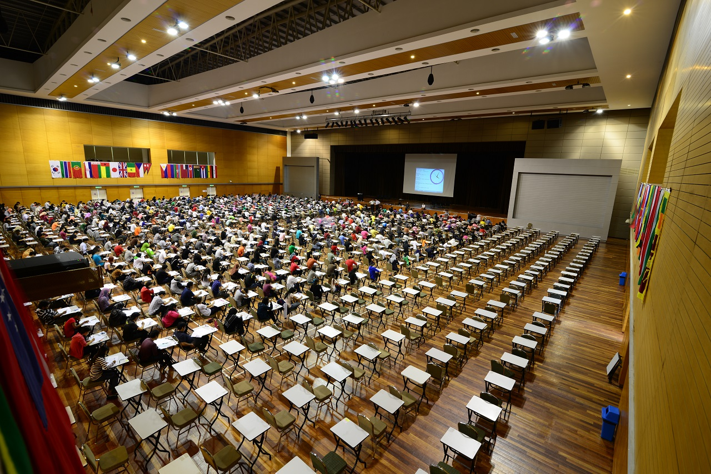
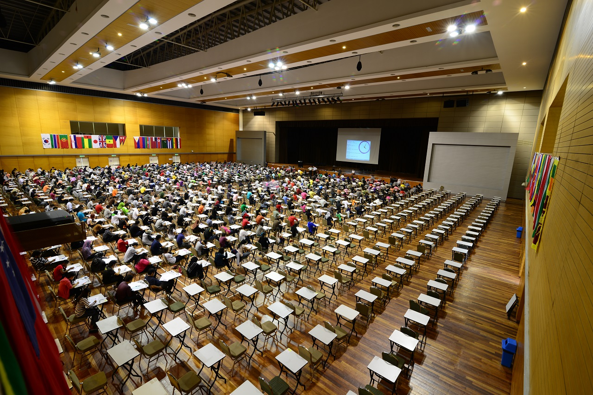

About Dewan Tun Chancellor
Dewan Tun Chancellor at MMU Cyberjaya is a multipurpose hall used for various events and activities. It serves as a venue for university ceremonies, conferences, seminars, and student events.
Key Features
- Spacious hall with seating capacity for large audiences
- Stage area for performances and presentations
- Audiovisual equipment for multimedia presentations
- Reception area and registration counters
Location
Dewan Tun Chancellor is located at a prominent location within the MMU Cyberjaya campus, easily accessible from various parts of the university.
Gallery
 
